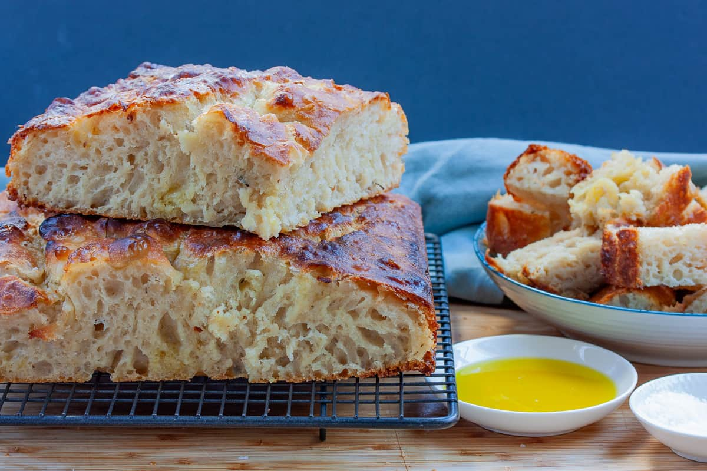
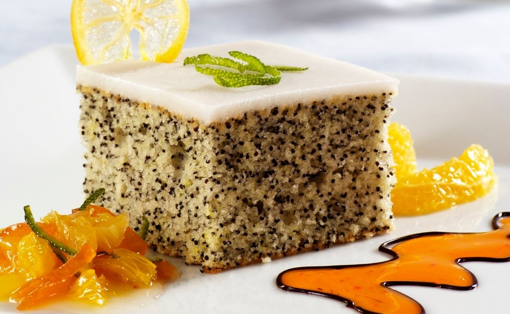
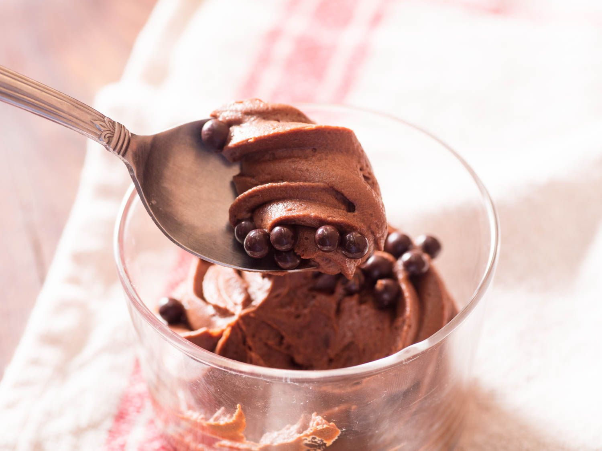
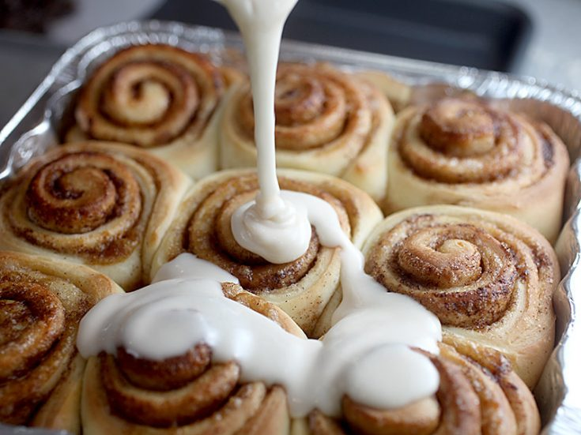

Unser klassisches Culinaria Focaccia Rezept, weder Traditionell, noch irgendwie besonders, aber lecker!

Lorenzianisches Spezialrezept. Einfach saftig und lecker, mehr gibt es dazu nicht zu sagen.

Simples aber leckeres Schokomousse Rezept aus meinem Lehrbuch.

Persönliches Lieblingsrezept. Relativ Arbeitsintensiv, aber absolut lohnenswert.
